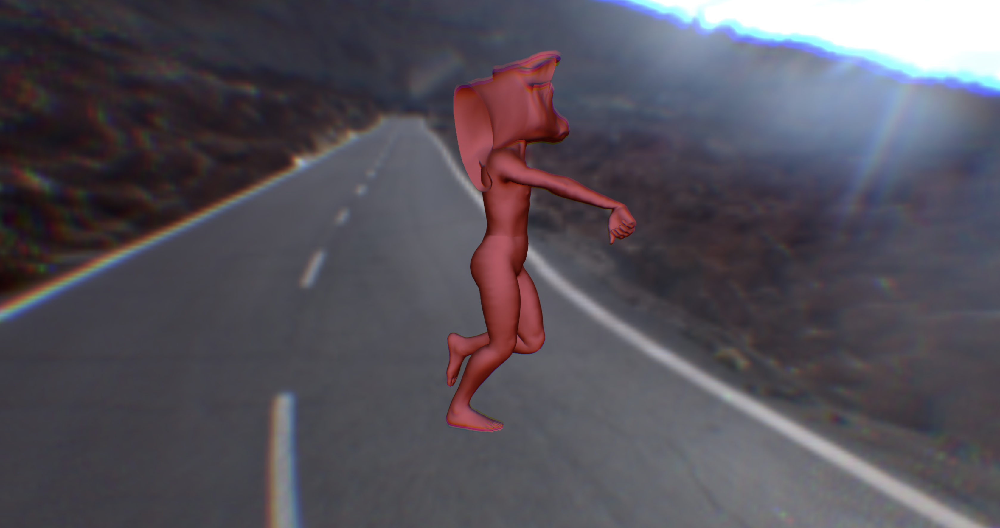

Augmented Reality
3D Immersive Enviornment
If you look at my images you will see an astronaut hidden between many astroids up in space looking down at a beach. The astronaut has found himself looking over an earth beach after being lost in space for years. He thinks he is hallucinating because its simply a slice of beach in the middle of open space, but it’s real. The personal motivation behind this was my fascination with space travel and the unknown. The audience experiences it like they are an outside but the interactive perspective watching the astronaut discover the beach. I want this image to inspire imagination and curiosity in the audience, let them imagine why the beach is in space.


Space Beach
